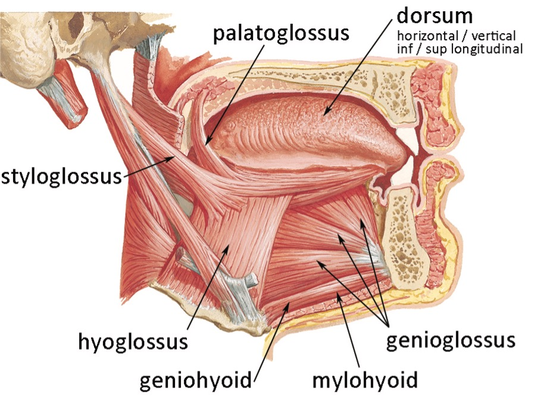
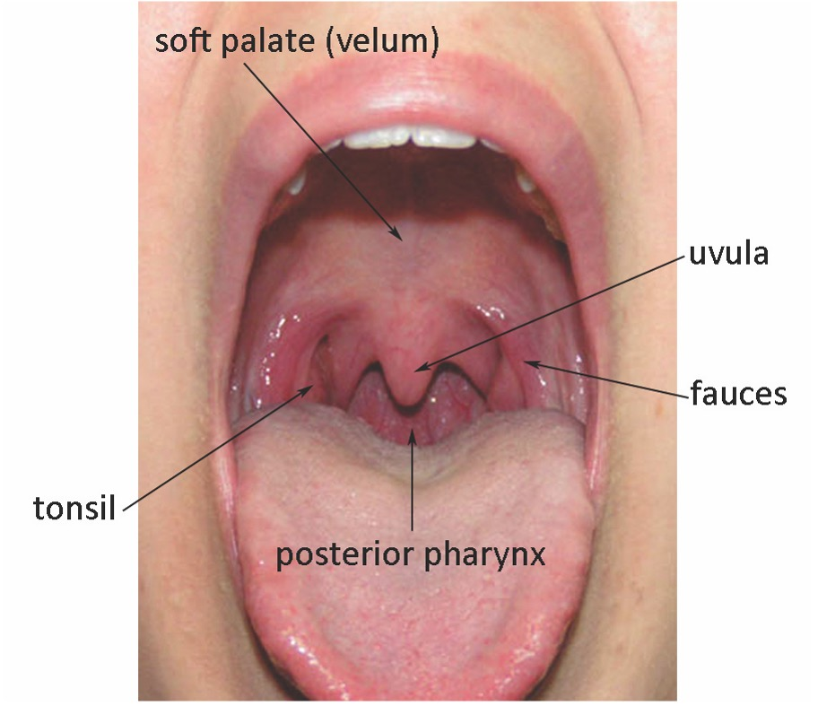
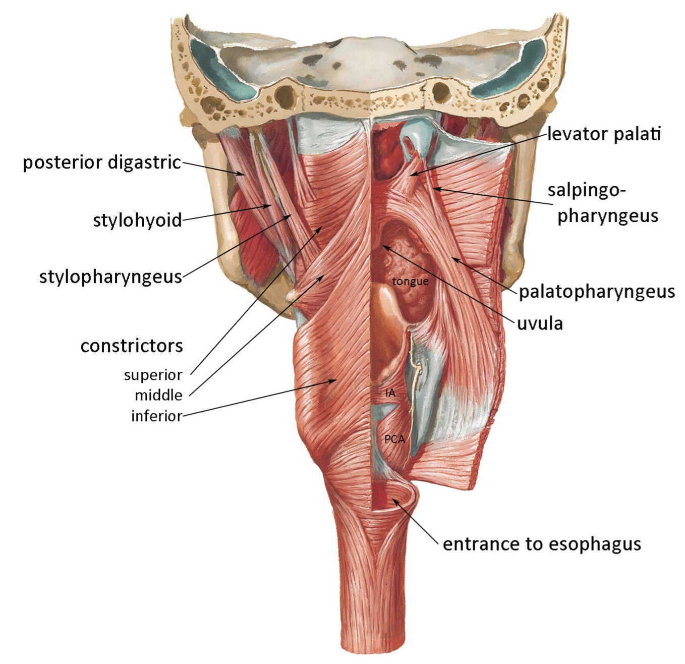
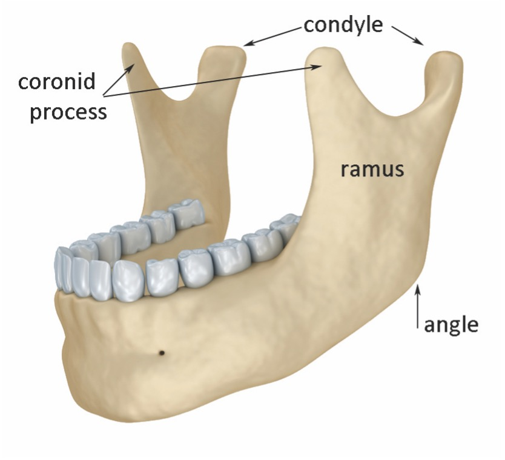
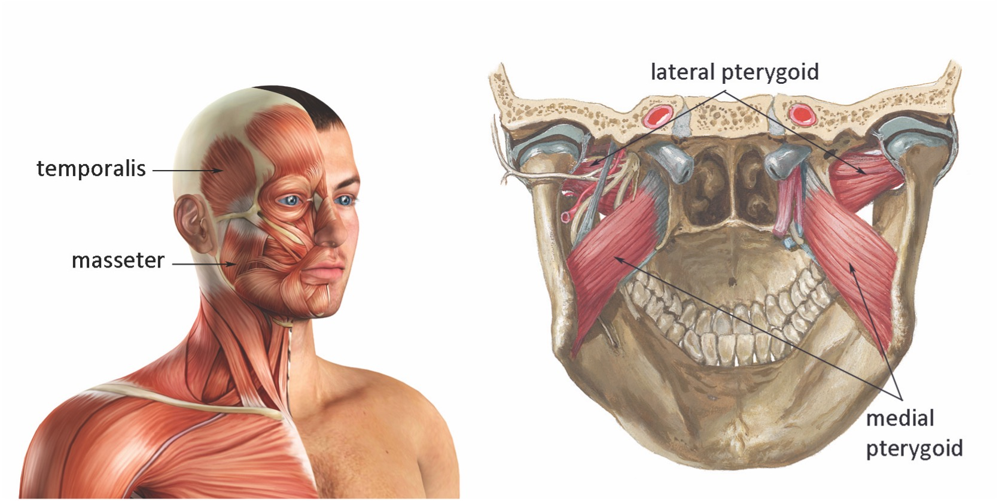
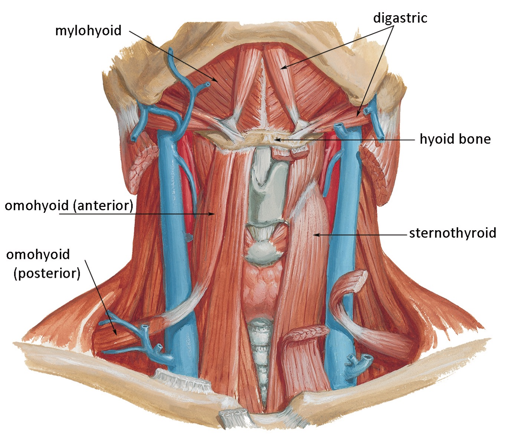
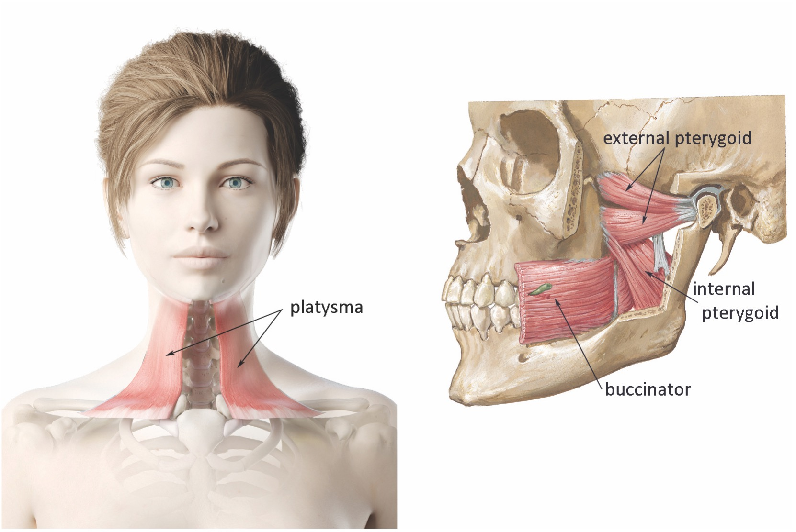
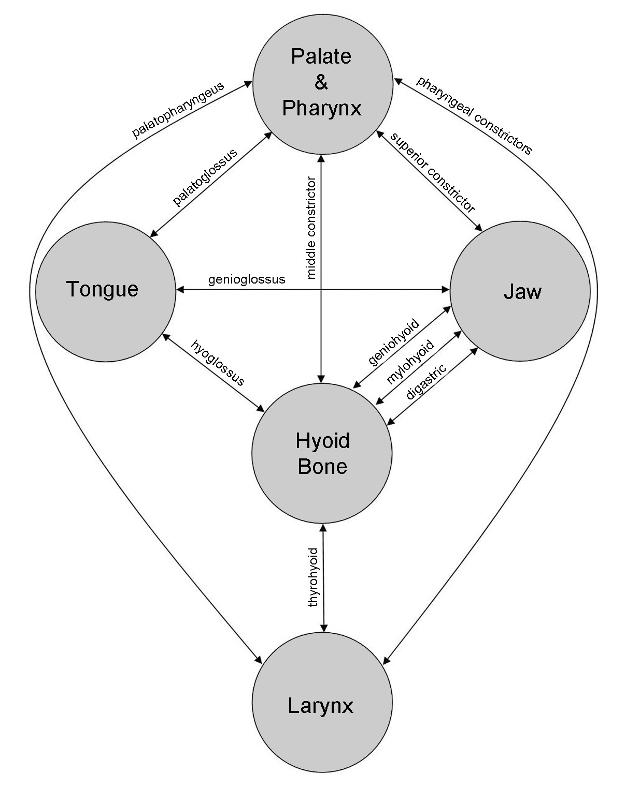
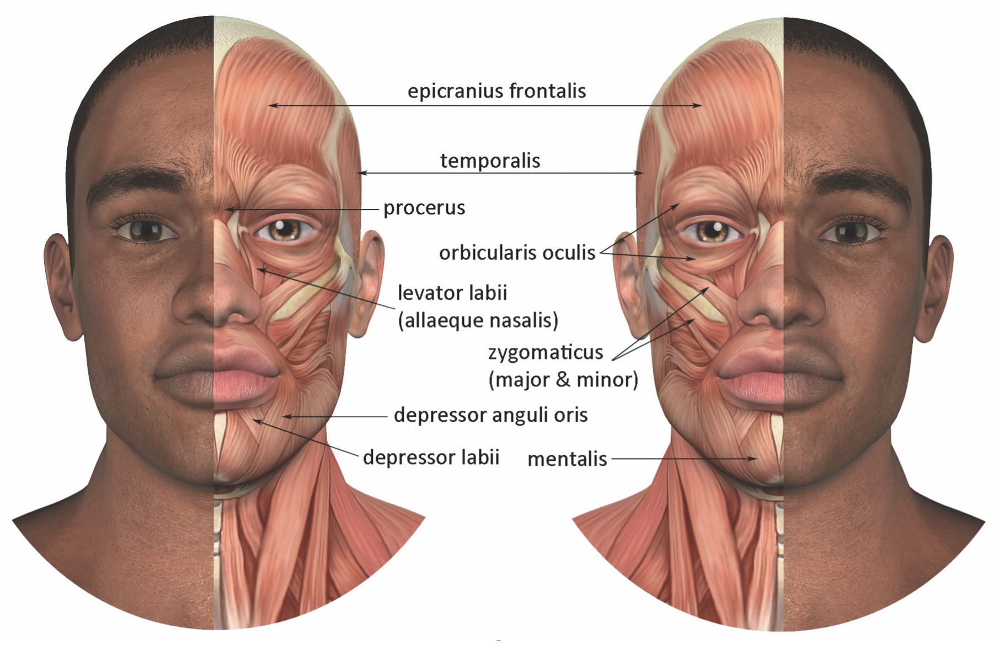

Chapter 11
A vast array of physical structures and actions fall under the general heading articulation, including the muscles of the jaw, tongue, pharynx, and palate. One also might include the muscles of the head that articulate to permit facial expression. Together, these form a complex and interactive system. Because many muscles of articulation serve multiple purposes, actions in one area can have inadvertent, negative consequences in another (as when the digastric elevates the larynx while it lowers the jaw). The challenge for professional voice users lies in separating these various functions to allow the maximum degree of vocal freedom and flexibility.
As was seen in the previous discussion of vocal tract resonance, the tongue plays a crucial role in the articulation of language; the formants of the vocal tract that are responsible for vowel definition are dependent on correct tongue placement and shape. Take a moment to revisit how this works. Gently speak or sing the vowel sequence /i – ε – a – o –u/. You should be able to feel your tongue changing position in the following pattern: for /i/, it is placed forward in a relatively high location, forming a narrow channel in the front of the oral cavity; by the time you get to /a/, the jaw has dropped slightly, the front of the tongue has lowered and the rear portion has moved backward to narrow the pharyngeal space; as you proceed to /u/, the tongue continues to move both back and up, further narrowing the pharynx, while the jaw closes and the lips round. Knowing these relative tongue positions helps one better understand the classification system for vowels. The front vowels /i/ and /e/ are produced by forming an acoustic constriction toward the front of the vocal tract; conversely, the back vowels, /a/, /o/ and /u/, result from a narrowing in the back of the vocal tract.
Many different muscles are required to place the tongue in the positions required for speech articulation. Like the larynx, the tongue consists of intrinsic and extrinsic muscle groups. Intrinsic muscles are found within the blade (dorsum) of the tongue, the portion that lies in the oral cavity and moves to form the vowels and consonants of speech. Extrinsic muscles lie below, behind and above the blade, enabling it to be extended, retracted, elevated, depressed and curled. Together, they form a large muscle complex that fills the space within the jaw, extending down to the hyoid bone and up into the pharynx and palate. Because of these multiple attachment points, movements of the tongue have the ability to impact activity in the jaw, larynx, and vocal tract.
Most of us have little awareness of the tongue beyond the dorsum. This portion is richly endowed with sensory nerve endings and taste buds, especially in the anterior portion. In its posterior, these features become progressively less apparent. There are good reasons for this: if the back of the tongue were as sensitive as the front, we likely would gag every time we say a word such as “sing,” which requires the tongue to press against the soft palate and uvula to produce the nasal continuant consonant /ŋ/.
Four separate groups of muscles are found within the dorsum, forming what might be described as a “muscle sandwich.” The top and bottom layers of this sandwich are comprised of the superior and inferior longitudinal tongue muscles, which have long fibers running from the anterior to posterior of the dorsum. When contracted simultaneously, the entire dorsum is shortened. Contraction solely in the superior curls the tip of the dorsum upward; contraction solely in the inferior curls the tip of the dorsum downward. The filling for the sandwich consists of the horizontal and vertical tongue muscles. As their names suggest, the horizontal muscles run through the medial/lateral plane of the dorsum, while vertical muscles are oriented from the top to bottom. Contraction in the former narrows the blade and is also responsible for curling the sides upward to form a long furrow; contracting the latter flattens the tongue.

Figure 11-1: Muscles of the tongue
Netter medical illustration used with permission of Elsevier. All rights reserved
The extrinsic muscles, including the palatoglossus, styloglossus, genioglossus and hyoglossus (glossus is the anatomical term for the tongue) position the dorsum within the oral cavity (Figure 11-1). Because all of these muscles are named according to points of origin and insertion, it’s easy to figure out their locations and functions. The first of these, the palatoglossus, originates in the soft palate and runs within the walls of the pharynx to insert into the underside of the tongue. As a dual-purpose muscle, it can raise the posterior of the tongue and/or lower the soft palate. The styloglossus begins at the styloid process, a protrusion of bone immediately in front of and slightly below the ear canal and inserts into the posterior of the tongue. Contraction retracts and elevates the back of the tongue and assists with curling the central portion. Tongue depression is accomplished through contraction of the hyoglossus, which links the tongue with the hyoid bone. The tongue is pulled forward by the genioglossus, a relatively large muscle that fills the interior arch of the mandible and inserts into the underside of the dorsum.
For optimal efficiency in phonation—both speaking and singing—all the tongue muscles must be allowed to function with as little tension as possible. The accuracy of a vowel or consonant relies on where the tongue is placed, not how firmly it is held in position. The attachments of the tongue to other moveable structures, including the jaw, hyoid bone and soft palate, allow a high degree of interactivity, some of which is good, some of which is not. The impact of these interconnections will be explored in greater depth later in this chapter.
The pharynx and palate are extremely busy places—especially in terms of muscle attachment and functions. The reasons for this become apparent when one considers the multiple functions served by these parts of the body. Their contribution to resonance was discussed in Chapters 3 and 4. But as important as resonance is for professional voice users, it is not a biological necessity—phonation is not required for survival. Biologically, the pharynx and palate fulfill two indispensable, life-sustaining functions: they form an airway, allowing the transport of oxygen to the lungs, and they serve as the entrance to the alimentary canal, passing sustenance to the digestive system.

Figure 11-2: Oral cavity
As we begin the discussion of the pharynx and palate, we should take a moment to review the “big picture” (Figure 11-2). Slowly run your tongue along the roof of your mouth from your front teeth backward. The first thing you come to is the alveolar ridge, a bony prominence that leads to your hard palate. This ridge plays an important role in the production of consonants, including the plosives /d/ and /t/, the nasal continuant /n/, and the sibilants /s/ and /z/. As you continue to trace your tongue backward along the hard palate, you come to the beginning of the soft palate, which functions as a valve, closing against the posterior wall of the pharynx to prevent air, water and food from passing between the mouth and nose.
Viewing your mouth with a mirror reveals more structures. The faucial pillars (fauces) are seen near the back of the tongue, resembling the vertical sections of a proscenium arch. The top of this proscenium is the soft palate, also known as the velum. The little thing that hangs down from the center of the velum is the uvula. From cartoon images in the movies and television, one might guess that the uvula is responsible for vibrato. This, of course, is not really true. It does, however, play an important role in the transportation of mucus. Hanging over the entrance to the esophagus, the uvula serves as a collection point for excess mucus produced in the nasopharynx and nose, which is then dropped directly into the digestive tract. If the uvula is missing or misshaped, mucus may collect on the soft palate, producing rattling noises from sympathetic vibrations induced by the singing voice. The tonsils (if they haven’t been surgically removed) are found at the base of each faucial pillar. The back of your throat, which is visible between the fauces, is the posterior wall of the pharynx.

Figure 11-3: Muscles of the palate and pharynx
Netter medical uillustration used with permission of Elsevier. All rights reserved
The pharynx is composed of several different muscles, including three that were discussed briefly in Chapter 8: the superior, middle and inferior constrictor muscles (11-3). As a reminder, these muscles wrap around the posterior of the pharynx, connecting to the thyroid cartilage, hyoid bone, stylohyoid ligament, mandible and skull. While they are intended by nature to assist with swallowing, narrowing the pharynx to help direct food into the esophagus, they are also important in the concept of the “open throat” for singing and speaking; maximal opening is achieved only through the release of tension in the constrictors.
Like the constrictors, the remaining pharyngeal muscles primarily are designed to assist in swallowing (Figure 11-3). Some, however, have connections to structures beyond the pharynx and may therefore have multiple functions. This is certainly the case for the palatoglossus muscle, which connects the tongue to the palate via the pharynx and rightly may be considered a muscle of all three areas: it raises the tongue, narrows the pharynx and lowers the palate. Another such muscle is the palatopharyngeus, which originates in the soft palate and courses downward through the pharynx to insert in the thyroid cartilage. Again, there are three possible functions: lowering the soft palate, tensing and narrowing the pharynx, and elevating the larynx. Laryngeal elevation also is a function of the stylopharyngeus muscle, which originates from the styloid process and runs downward between the superior and middle constrictors, where it merges with the palatopharyngeus and connects to the thyroid cartilage. As was mentioned in Chapter 8, the stylopharyngeus is the only muscle capable of actively opening the pharynx; however, this action always is accompanied by laryngeal elevation, rendering it of little pedagogical use in creating the open throat desired for optimal voice production. The final muscle of the pharynx is the salpingopharyngeus, which forms a narrow band running from the auditory tube downward to merge with the palatopharyngeus. Contraction elevates the lateral walls to narrow the pharynx and also opens the end of the auditory tube to equalize pressure in the middle ear.
The soft palate is an area that receives significant attention in voice pedagogy. Many singing teachers advocate its active elevation, closing the nasal port and enlarging resonance space in the oral cavity. Others prefer a relaxed, lowered position that opens the nasal port and fully engages nasal resonance. Still others advocate a midpoint, encouraging slight elevation of the palate with incomplete closure of the nasal port, seeking to optimize and balance resonance factors in the oral and nasal cavities. In the end, these options are best seen as aesthetic choices, for each yields a distinctive vocal timbre that is subject to personal preference.
Biologically, elevation of the soft palate is a required function for swallowing (11/1).
Media 11/1: Fluoroscope of swallowing
When elevated, the palate is pulled against the posterior pharyngeal wall, closing the nasal port and ensuring that the material being swallowed is directed down into the esophagus and not up into the nose. As part of the swallowing reflex, an upward movement of the larynx always accompanies the upward pull of the palate. Professional voice users, however, must learn to overcome this reflexive connection, allowing the palate to rise while the larynx remains in a lowered position.
Palatal elevation is the responsibility of the levator palati muscle, also known as the levator veli palatini (Figure 11-3, above). This muscle, which forms the bulk of the palate, originates from the temporal bone (skull) and the auditory tube to form a sling-like structure drawing the palate upward and backward at an oblique angle to close against the pharynx. The movement is not large, better measured in millimeters than centimeters. (I’ve heard singers describe lifting their palates four or five inches, which is a distinct physical impossibility, regardless of how desirable it might be for increasing resonance.) Singers who seek to increase resonance space through palatal elevation also might consider contracting the musculus uvulae, which retracts the uvula upward into the soft palate. The palate is tensed and flattened through contraction of the tensor palati muscle, which—like the levator muscle—connects the palate to the skull and auditory tubes. When contracted, this muscle works together with the palatopharyngeus to open the auditory tubes and equalize air pressure in the middle ear.
Lowering of the palate can be achieved either passively or actively. If the levator and tensor palati muscles are relaxed, the weight of gravity pressing upon the palate will passively depress it, opening the nasal port. In the prone or supine position, gravity may actually pull the palate against the pharyngeal wall, which can lead to snoring. The previously mentioned palatoglossus and palatopharyngeus muscles both contract to actively lower the palate.
Let’s get one thing straight from the start: people have a jaw, not a lower and upper jaw. The jaw, or mandible, is a single, unpaired bone that resembles the letter U or V when viewed from above (Figure 11-4).

Figure 11-14: Mandible (jawbone)
An upward projection called the ramus is seen at the posterior of each side. Two processes are located at the top of each ramus, the anterior of which is the coronid. When the jaw is elevated and the mouth closed, the coronid process slips into the opening between the maxillae—colloquially, albeit incorrectly, known as the upper jaw—and the zygomatic bone of the skull (cheekbone). The condylar process, also called the condyle, arises from the posterior of the ramus and articulates with the temporal bone of the skull at the temporomandibular joint (TMJ). This joint can both rotate and translate (slide); these actions can occur simultaneously, thereby increasing the possible range of jaw motion. A band of protective cartilage called the meniscus lies between the condyle and the skull.
Some professional voice users suffer from dysfunction in the TM joint, commonly referred to as TMJ Syndrome (or TMJ Dysfunction). Symptoms include pain in the face and jaw, restricted range of jaw motion, and miscellaneous clicking, popping, and grating noises in the TM joint (Zemlin, 1998). Because we often must lower the jaw widely and quickly, this syndrome is particularly problematic for singers. Treatment options include bite adjustment, heat, and drugs ranging from analgesics to muscle relaxants. Singers who experience the symptoms of TMJ Dysfunction should consult their dentist or physician for treatment options.
Like the palate, tongue, pharynx and larynx, the jaw serves multiple functions in the body: mastication (chewing) and articulation for speech. Several muscles are provided to accomplish these functions, which can be categorized as lowering or raising the jaw (depression and elevation).
There is an old saying that states if you don’t want an alligator to bite you, hold its jaw closed. This may seem a bit glib but is actually a very reasonable commentary on the balance between muscles that open and close the jaw. In short, muscles that raise the jaw are robust and very strong—in humans, they can exert sufficient force to break teeth. By contrast, muscles that open the jaw are relatively weak. This imbalance often creates pedagogic challenges to voice students who attempt to control jaw movement through muscular antagonism. While desirable for regulation of breathing and phonation, antagonism in jaw movement will only result in excess tension and inhibition of free tone production. The reasons for this will become clear as we examine the muscles of the jaw and their interconnections to other structures that are vital for phonation.

Figure 11-5: Jaw elevators
Netter medical illustration used with permission of Elsevier. All rights reserved
The primary muscles responsible for jaw elevation are the masseter, internal pterygoid (a.k.a. medial pterygoid), and temporalis (Figure 11-5). The masseter is a powerful muscle that originates in the zygomatic region (cheekbones) and inserts over most of the ramus. The internal pterygoid originates at the pterygoid plate (the region of the skull between the zygomatic arch and top teeth) and inserts to the inside of the jaw at the base of the ramus. Together, the pterygoid and masseter form a sling-like structure that closes and retracts the jaw, inducing a grinding motion required for mastication. The third jaw closer, the temporalis, is a large, fan-shaped muscle that covers most of the side of the head above the ear, inserting into the anterior of the ramus near the coronid process. Contraction results in a biting or snapping motion of the jaw.
The masseter and temporalis are easily palpated. Place your hand on top of the posterior of your jaw at the ramus and tightly bite down; you will feel the masseter bulge under your fingers. Now, move your hand to the side of your head above your ear to feel the contraction of the temporalis as you bite. Gradually move your fingers forward and backward to determine the area covered by this large muscle. People who are susceptible to muscle tension headaches often experience discomfort in the area of the temporalis, the cause of which might well be excess tension in the jaw and grinding of the teeth.
The jaw closing muscles gain mechanical advantage through their connections to the skull, which is fixed in position relative to the jaw. By contrast, most of the muscles that lower the jaw are attached to the moveable hyoid bone. Several of these were previously discussed in the context of laryngeal elevators—they will now be examined in their alternate roles as depressors of the jaw. In everyday life, the jaw generally is dropped by relaxing the closing muscles, assisted by the downward pull of gravity. However, in singing, speaking, and eating, the jaw often must be dropped farther and more quickly than is possible by gravity alone. This is the function of the digastric, mylohyoid and geniohyoid muscles (Figure 11-1, 11-6).

Figure 11-6: Interconnections--jaw, hyoid, larynx
Netter medical illustration used with permission of Elsevier. All rights reserved
As you will recall, the digastric muscle has two bellies. The posterior belly runs from the mastoid process to the hyoid bone and contracts to elevate the larynx when swallowing. The anterior belly continues from the hyoid bone, inserting into the mandible near the point of the chin and contracts to depress the jaw. The mylohyoid is the thinnest and least significant of the jaw openers, a fan-shaped muscle originating along the inside of the mandible and inserting into the hyoid bone. The more important function of the mylohyoid is as the muscular floor of the mouth. Finally, the geniohyoid is another relatively thin band of muscle connecting the mandible and hyoid, coursing between the mylohyoid (below) and genioglossus (above).
It now becomes apparent why muscular antagonism is not a welcome phenomenon in jaw movement. If resistive tension is present in the jaw closers, the openers—which are dual-function muscles—will induce their secondary action: laryngeal elevation. This action can be somewhat overcome by strong anchoring of the larynx by the sternothyroid, sternohyoid and omohyoid muscles; however, the resulting tug-of-war will impair vocal freedom and supple tone production. A much better solution is to minimize tension in all jaw muscles during phonation. One method to check for appropriate muscular freedom is sometimes referred to as the jaw juggle: use your hand to rapidly move your jaw up and down, gently tapping your teeth together—learn to do this without any resistive tension in the jaw. Rapidly wiggling the jaw from side to side is another effective method to release excess tension.
Two jaw-depressing muscles exist that do not have a connection to the hyoid bone; unfortunately, neither is terribly effective at its job. The first is the platysma, a wide, thin muscle of the face that is primarily responsible for producing a grimace (Figure 11-7). While this may help drop the jaw, it also distorts the appearance of the face—a tradeoff few professional voice users are eager to accept. Of greater significance is the lateral pterygoid muscle, which also is known as the external pterygoid (Figure 11-7). Originating at the pterygoid plate, this muscle travels laterally to insert into the top of the ramus. When contracted, the jaw is pulled forward, slightly rotating the condyle within the temporomandibular joint, and inducing a small dropping of the jaw and opening of the mouth.

Figure 11-7: Jaw depressors
Netter medical illustration used with permission of Elsevier. All rights reserved
By combining the actions of the jaw muscles, additional movements may be induced. For example, alternating contraction the of the lateral pterygoid and/or temporalis muscles will move the jaw laterally from side to side—muscles on one side of the skull contract while those on the other side are relaxed. Rapid repetition of this gesture during vocalization is a useful pedagogical tool that can sometimes help cure excess muscular tension and antagonism. Strong contraction in the jaw depressors (digastric, geniohyoid, mylohyoid), combined with action in the temporalis will result in retraction of the jaw. Because this motion elevates and inhibits the larynx, it is not generally considered to be appropriate in singing.
The final movement of the jaw is reserved for those occasions when maximal opening is required, such as a visit to the dentist, eating a thick sandwich, or singing a very high pitch. Place your finger on your temporomandibular joint and drop your jaw as far as possible. You will notice that a space opens between the ramus and your skull; you may also feel—or even hear—a clicking or popping noise as this occurs. Dropping the jaw in this manner, out of its normal socket in the TM joint, is called subluxation. Singers who are troubled by excess popping or friction when opening to this extent might try rotating, instead of dropping, the jaw into position. When called for in singing, such as for extremely high or loud pitches, subluxation must be accomplished with as little tension in the jaw muscles as possible to avoid laryngeal elevation.
Interconnections
As was stated at the beginning of this chapter and has now been demonstrated, articulatory structures are complex and highly interactive (Figure 11-8). Because of the high degree of interconnectivity, action in one area can easily impact another. Some of these possible interactions include:
In each case, the secondary, undesired action can be reduced or eliminated through conscious relaxation and minimizing muscular antagonism. For example, when the levator palati tenses to lift the soft palate, the palatoglossus muscle must remain relaxed and pliable to avoid elevating the tongue and larynx. Control at this level truly is a learned behavior, often acquired only through extensive trial and error. In the initial stages of voice training, few students will be able to differentiate between contraction of the anterior and posterior bellies of the digastric—let alone between the adjacent geniohyoid and genioglossus muscles! Time, patience, and practice, however, eventually will lead to appropriate control.

Figure 11-8: Interconnections
Nature has provided an extraordinarily effective—not to mention, free—biofeedback tool to help resolve some of these issues of muscular cross contamination: the human hand. Students of voice and singing should take full advantage of their ability to self-monitor. Laryngeal position can be measured using devices such as the electroglottograph, laryngoscope or even a basic video camera; but it also can be monitored simply by touching the thyroid cartilage. Tongue tension can be evaluated by pressing the thumb or a finger gently against the underside of the jaw. Movement will be felt as the tongue shifts position to produce vowels and consonants; the overall texture, however, should be soft and pliable. Excess tension will be felt as an active, downward push that is caused by tightly flexed extrinsic tongue muscles. Placing the hands atop the ramus will help determine whether or not the masseter is fully releasing during jaw dropping (as it should) and also can help identify excess retraction or protrusion.
With the exception of lip movements required for vowel and consonant production, the articulatory mechanisms of the face generally serve expressive rather than linguistic functions. Facial muscles also lie primarily on the exterior of the skull and few have direct connections to the vocal tract. As a result, possibilities for inter-muscle influence are potentially less acute than in the true articulatory system; they do, however, exist. Students and other less experienced voice users often will work too hard to be expressive, which leads to exaggerated, tension-filled facial gestures. Such maneuvers not only are distracting, but also can trigger excess tension in the neck, jaw, tongue and voice. Once again, optimal effects are achieved when tension is “just right” and adjacent structures are allowed their full independence.
As is the case with other anatomical areas, such as the palate and diaphragm, abundant misconceptions surround the real actions of facial muscles. In spite of what I have been told by colleagues and former teachers, there is no physiological connection between raising the cheeks with the zygomatic muscles and lifting the soft palate (but there is an acoustic impact from lifting the upper lip to show some of the top teeth). Flaring the nostrils during nasal inhalation cannot raise the palate, nor will raising the eyebrows compensate for singing flat. The real expressive actions and the muscles that generate them are summarized as follows (Figure 11-9):

Figure 11-9: Facial muscles